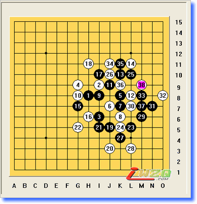

仇云飞：2008首都师范大学高校赛棋谱简评
#1 仇云飞：2008首都师范大学高校赛棋谱简评 作者：有志青年 发表时间：2008-12-27 16:33:45
本次高校赛虽然没有实现个人夺冠的目标,但总体表现还是可以接受的,毕竟自己只是提前两天才开始正式恢复下棋（感谢MM婶提供棋谱帮助：））自己的计算广度深度速度的恢复比较满意,而且最终帮助自己代表的团体拿到了冠军.在此把9轮比赛谱发上来,并且对其中重要的几盘作下棋评.(本次比赛被拉进北京工商大学嘉华学院当外援并帮助她夺冠,终于弥补全团赛拖北京队后腿的遗憾)
第一轮 云月 仇云飞(黑)胜吕涛(白) 交换 5A=H10
第二轮 妖刀 张维(黑)负仇云飞(白) 5A=G10 未交换
通瑞星白必胜变化
第三轮 岚月 曹东(黑)负仇云飞(白) 5A=J7 交换

本轮比赛是我最想赢下来的比赛,赛前的准备也很充分,在2次全国赛 上海名人战 还有我夺冠的浙江A组循环赛上对冬瓜就没赢过,这回是打破纪录的好机会.实战我开出岚月,对局很顺利的行进到19手,20变招!MM婶的独创研究,冬瓜开始长考(也是我所希望的)21手正确,22再次变招,最强点是H4点,由于实战时间紧张,而且22之后黑的VCT并不是能直观的看出来,所以我走了实战的22.23一出表示战术成功,冬瓜误以为右边有杀,结果有反,从25~~33无奈之举 34打消他的侵消白优势的念头,38后白优势过大而且冬瓜时间所剩无几,投子认负
第四轮 疏星 张宇(黑)负仇云飞(白) 5A= G9 未交换
由于在中心看过张宇的几盘棋,对他的实力有所了解,他开出疏星,我没有交换,11手?已经有结论11手后白走实战中的12后白胜,13无奈的防守,14!确立了胜势,22后抓双3禁
段然也算是老对手了,我很清楚他谱量小但是中盘比较强,所以我开出松月,实战打点......我自己也不太熟悉,尤其这套黑7以后的变化,14走20位可能攻击力度更强一些,18~~~22手的手段是我实战计算的结果,23唯一防在G4,实战23后简单抓33
第六轮 山月 高辰(黑)负仇云飞(白) 5A=I7
我对于高辰的了解是中盘强而谱知道的比较少
而且比赛之前,看到高辰和张呈在摆松月,这使我放弃了开松月的念头,实战开出山月,对手交换后白4古老的变化,黑复杂必胜,实战黑5?白6后白基本必胜,实战的7以及后来的防守都是最强但白优势过大 20抓33
第七轮 新月 曾扬峰(黑)和仇云飞(白) 5A=J8
跟扬峰第一次实战对局,比赛开始前脑子里挑选了几套变化,最后不知道为什么突然想开新月了,
1到15..正常行进,让我很郁闷的开局阶段.16为了保持余味的下法,17~~19正常交换,20拓展的一手,22占据黑关键点，23后我大概算了下，黑在下方没什么东西，24，26 开始转身反击。扬峰也很清楚下方局势，27到43把下面交换干净并且借棋去防守上面，此后我的骗杀手段欺骗性不够，扬峰应对无误。双方握手言和。
第八轮 斜月 仇云飞（黑）胜沈攒（白） 5A=G9
这盘棋胜负没什么意义，某些原因对手并没有认真，再次感谢MM婶的棋谱帮助：）
第九轮 松月 仇云飞（黑）负张呈（白） 5A=I9
这一轮我和棋就能夺冠，但是张呈赢下这盘也很有机会拿冠军，这种情况下我开
#2 Re:仇云飞：2008首都师范大学高校赛棋谱简评 作者：Solmyr 发表时间：2008-12-28 15:53:56
 云飞。。。。。。叫我什么来着~~~~~~无语啊！而且是“瓒”，不是“攒”拜托老兄！
云飞。。。。。。叫我什么来着~~~~~~无语啊！而且是“瓒”，不是“攒”拜托老兄！
#3 Re:仇云飞：2008首都师范大学高校赛棋谱简评 作者：掌棋宣传员 发表时间：2008-12-30 1:46:16
传说中的MM婶...